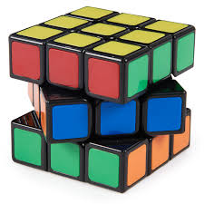
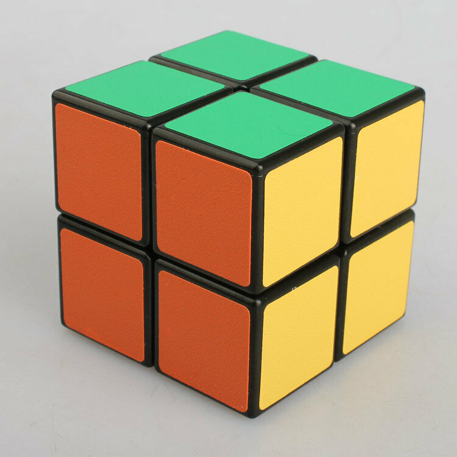
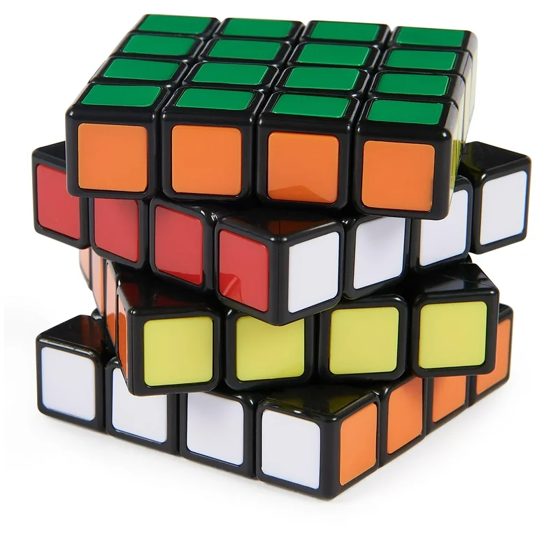

Historia kostki Rubika
Kostka Rubika została wynaleziona w 1974 roku przez Ernő Rubika, węgierskiego profesora architektury. Początkowo nazywana "Magiczna Kostka", zyskała światową popularność w latach 80-tych XX wieku. Obecnie jest jednym z najbardziej rozpoznawalnych łamańców logicznych na świecie.
Rodzaje kostek Rubika
| Model | Opis | Obrazek |
|---|---|---|
| 3x3 | Najbardziej popularny model. Standardowa kostka Rubika z sześcioma kolorami. |  |
| 2x2 | Mniejsza wersja standardowej kostki. Składa się tylko z 4 mniejszych kostek na każdej ścianie. |  |
| 4x4 | Większa wersja, znana również jako "Rubik's Revenge". Ma 16 małych kostek na każdej ścianie. |  |
Zastosowanie kostki Rubika
Kostka Rubika nie tylko jest popularną zabawką, ale również jest wykorzystywana w matematyce, algorytmach, a nawet w psychoterapii, pomagając w rozwiązywaniu problemów logicznych i rozwijaniu zdolności poznawczych.
Ciekawostki
- W 1982 roku odbyły się pierwsze Mistrzostwa Świata w układaniu kostki Rubika.
- Kostka Rubika była początkowo zaprezentowana jako narzędzie edukacyjne do nauki przestrzennych pojęć matematycznych.
- Rekordy w układaniu kostki Rubika są ustanawiane w różnych kategoriach, w tym najszybsze rozwiązanie w historii.
Interaktywne elementy
Zobacz ciekawy film o kostce Rubika
Tutaj znajdziesz film na temat najnowszych rekordów w układaniu kostki Rubika: